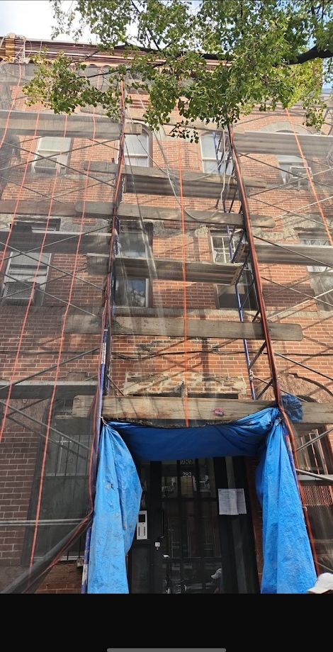

Practical notes on building, upkeep and staying compliant in New York, from the people doing the work.
Owning or managing a building in New York City means the façade can never be an afterthought. Loose brick, worn mortar joints, cracked parapets and rusting lintels can start as small issues and turn into expensive repairs if they are left alone.
Read the note
A brick wall can still look solid from the street even when the mortar joints are already failing. Once the joints start washing out, cracking or turning to powder, water has an easier path into the wall.
Read the note Facades and ComplianceGetting a DOB violation can be frustrating, especially when the notice uses technical language and it is not immediately clear what needs to be repaired.
Read the note Facades and ComplianceStucco can give an older building a clean, updated look, but it has to be installed over a sound surface. Covering loose or damaged material without fixing what is underneath usually creates another problem later.
Read the note Facades and ComplianceParapet walls take a beating. They sit above the roofline and are exposed to rain, wind, snow and constant temperature changes with very little protection.
Read the note InteriorsA kitchen renovation should make the space look better, but just as importantly, it should make the room easier to use every day.
Read the note InteriorsBathrooms are small compared with most rooms, but they involve a lot of trades packed into one space. A clean finished bathroom depends on what happens behind the tile just as much as the fixtures you see at the end.
Read the note Concrete and SiteworkA good paver job is not just about choosing a nice color or pattern. The part you do not see - the excavation, base and compaction - is what decides whether the finished area still looks good years later.
Read the note Concrete and SiteworkA sidewalk violation usually starts with something simple: a raised flag, a bad crack, settlement, a broken section or another condition that creates a trip hazard.
Read the note Concrete and SiteworkConcrete is only as good as the preparation underneath it. A slab can look perfect on the day it is poured and still fail early if the base, reinforcement or drainage was not handled properly.
Read the note Concrete and SiteworkCracked and uneven sidewalks are common in New York, but once a section starts lifting, settling or breaking apart, it can quickly become a safety issue.
Read the note Concrete and SiteworkPotholes and cracked asphalt are more than an appearance problem. Once water gets into the pavement and base, the damaged area usually keeps growing.
Read the note New ConstructionNew construction is not one job - it is dozens of jobs that have to happen in the right order. Good coordination is what keeps a project moving instead of having one trade waiting on another.
Read the noteHave a question about your property that is not covered here? Call Danny at (347) 659-0881 or request an estimate.